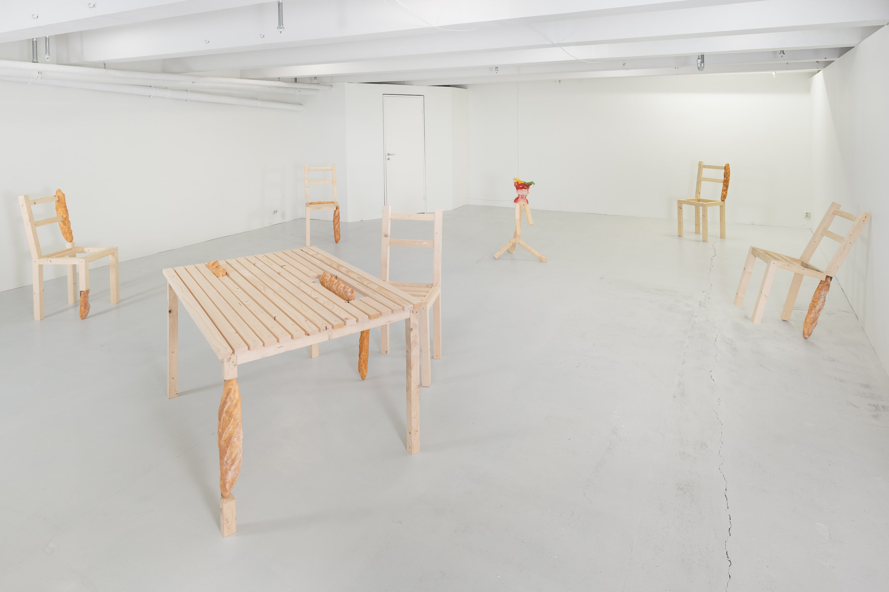
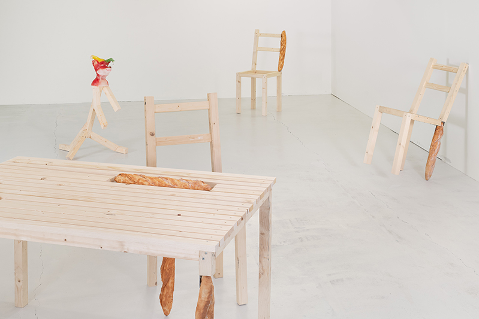
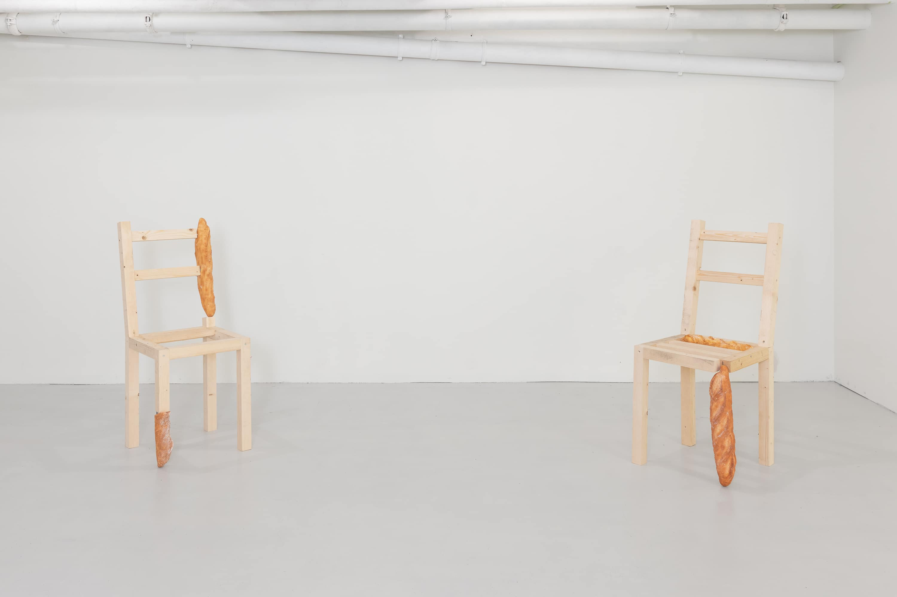
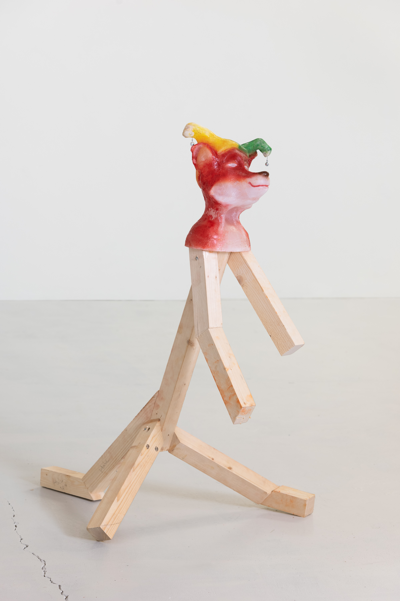

FOX
Vestfold Kunstsenter, Tønsberg, Norway
14.09. - 18.09.22

FOX, 2022

FOX, 2022

Chair #2 & Chair #3, 2022, painted A1, wood, screws, bracket, 95 x 40 x 40 cm & 95 x 40 x 40 cm

Tabel & Chair #6 , 2022, painted A1, wood, screws, bracket, 74 x 100 x 120 cm & 95 x 40 x 40 cm

Tabel, 2022, painted A1, wood, screws, bracket, 74 x 100 x 120 cm

Reynard, 2022, wax, bells, silver chain, wood, screws, bracket, 140 x 50 x 60cm
“… bare én gang har jeg følt at lykken har stått mig bi, og det var da jeg fikk høre historien om en konge i det land som hetter Flandern, det ligger langt herfra. Den konge var så rik at han slett ikke kunne telle alle skattene han hadde. Kort før han døde, fik han lagt alle skattene i store kister og gjemte dem et sted ingen visste om. Men se, min gamle far fant kistene og gjemte dem et annet sted igjen. En dag fik han den ideen at han skulle kjøpe seg en stor hær for alt gullet og sølvet og edelsteinene som var i kistene. Planen var at soldatene skulle slå dere ihjel. Jeg spekulerte dag og natt på hvordan jeg skulle få dem til at lade være, men så hadde det seg at jeg hørte min far hviske til min mor at han skulle flytte kistene til et annet sted. Da han gikk ut, listet jeg med etter, lur som jeg er, og på den måten fikk jeg se hvor han gjemte dem. Og neste natt igjen listet jeg meg ut og flyttet kistene til en grotte jeg hadde funnet dagen før slik at da min far kom med alle soldatene, så fant ikke min far skattkistene igjen hvor meget han enn lette. Da blev Soldatene så sinte at de slo ham i hjel.
Men hvor er denne hule full af gull?
I Flandern, der er det en dyp og mørk skog som heter Husterlo. Skogen er stor og tett – og mørk; voldsomme vinder farer igjennom den. Og like i nærheten av skogen er der et lille tjern kalt ”Krafåkiteb”. Når man kommer til skogen, må man finne det lille tjernet. Og når det er funnet må man gå langs bredden inntil man kommer til et lite nes hvor der vokser to store poppel-trær – de kjennes igjen for de er de høyeste trærne i skogen. Søk mellom røttene på disse trærne, der ligger to små, hvite steiner som har dødninghoder på seg. Gå seks skritt til høyre og der – når man tramper med føttene – hører man en hul lyd. Der skal man grave omtrent seks fot ned til man kommer til en dør som er godt boltet og låst. Ingen nøkkel kan åpne den, og ingen kraft i verden kan bryte den opp. Men her er nøkkelordet man må bruke for å få åpnet den. Gå litt tilbake og si de magiske ordene:… “
fra Reinke Rev af Jørgen Lunde og Margrethe Wernøe
Photo: Kunstdok / Istvan Virag
links:
Kuba Paris